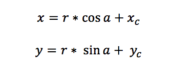
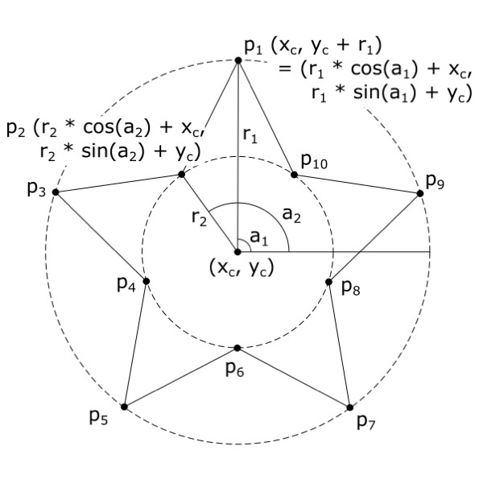

Problem made by Lockheed Martin, is CodeQuest 2018 Problem 16
You are working on a drawing program and you have been tasked with creating a function to draw star shapes. The program already has the capability to draw line segments between points so all you need to do is calculate the coordinates for the vertices of the star. The number of vertices in a star is double the number of the star’s points, so a five-pointed star will have ten vertices: five on the tips of the star’s points, and five in between the points. You can draw a circle through all the vertices on the star’s points and another smaller circle through all the vertices between the points. The center point of both circles is the same as the center point of the star. The angles between the star’s vertices relative to the center are the all the same and add up to 360 degrees or 2π radians. You can take advantage of these facts to calculate the coordinates of the star’s vertices using the formula for the coordinates of a point on a circle:

where r is the radius of the circle, (xc, yc) are the coordinates of the center of the circle, and a is the angle between the point and the point on the circumference of the circle at zero degrees. For a point directly above the center of the circle, a will be 90 degrees or π / 2 radians.

Hint: Make sure you know if your programming language’s sin and cos functions take degrees or radians and convert your angles as needed.
The first line of the file Prob16.in.txt will contain a positive integer T denoting the number of test cases that follow. Each test case will have the following input:
• A single line containing five integers in the format:
xc yc p r1 r2
where xc is the x-coordinate of the star’s center point, yc is the y-coordinate of the star’s center point, p is the number of points in the star, r1 is the radius of the circle that goes through the star’s points and r2 is the radius of the circle that goes through the vertices between the star’s points.
3
0 0 5 100 50
50 50 8 120 70
-50 -50 4 80 40
For each test case, your program should output one line. The line should contain the coordinates for each vertex in the star with a comma in between the x- and y-coordinates and a space between each vertex. The star should be oriented so that one point is directly above the center of the star at coordinates (xc, yc + r1). The list of vertices should start with this point and continue around the star in a counter-clockwise direction listing each vertex only once. The coordinates for each vertex should be rounded to two decimal places.
0.00,100.00 -29.39,40.45 -95.11,30.90 -47.55,-15.45 -58.78,-80.90 0.00,-50.00 58.78,-80.90 47.55,-15.45 95.11,30.90 29.39,40.45
50.00,170.00 23.21,114.67 -34.85,134.85 -14.67,76.79 -70.00,50.00 -14.67,23.21 -34.85,-34.85 23.21,-14.67 50.00,-70.00 76.79,-14.67 134.85,-34.85 114.67,23.21 170.00,50.00 114.67,76.79 134.85,134.85 76.79,114.67
-50.00,30.00 -78.28,-21.72 -130.00,-50.00 -78.28,-78.28 -50.00,-130.00 -21.72,-78.28 30.00,-50.00 -21.72,-21.72
Note: Because these lines are long, we have added a blank line between test case outputs only in the problem packet. Do not do this in your program! Compare your output to the example output file provided!